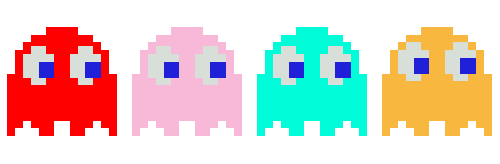

Pac-Man:
The classic Pac-man comes back to life with a twist. Two player will each control a specific Pac-man character. Within a two minute time limit, both players will try to eat as many pellets as possible while staying alive. Players can die from being caught by the ghosts or caught by a Super sized Pac-man. Once there is only one player left then the remaining player wins the game.

Some of the major challenges while creating this game was the getting "Collision Detection" feature. For this game, I used Three.JS for this game and which allows for simple and nice looking graphics. However, Three.js doesn't have any feature that will allow you to detect when to objects have collided. For a game like Pac-man, collisions happens almost every second. You collide not only when Pac-man runs into a ghost or wall/boundary, but additionally when you run into another player or when you eat a pellet or special fruit.* Running A* with the four separate ghost and keeping them in sync. Having the ghost target node be a node that test just passed which means that node would be in the closed list, since it cannot go back to a node that it passed.... Ghost in Pac-man, are not allowed to go backwards only forwards. Getting the portal to work on a single computer was super easy lol once it passed a certain point make it add/sub a certain amount from the height and Boom the Pac-man was teleported to the next portal. But once trying to incorporate this on the server, for some reason the Pac-man sprite would continuously bounce between portals. Clickable Meshes were also a very difficult process. Since my Map included negatives, the collision function I made for Flappy Bird did not transfer nicely to Pac-man. When creating the other Pac-Man, there were a couple problems trying to have Pac-Man sprites appear for the number of Sprites. Also having the game realize when their was only one player remaining was a slightly difficult as well.
Here is the link to the Pac-man Github Repo. It includes the folder where I received the sprites and audio for the game. Link to Pac-Man Github Repo